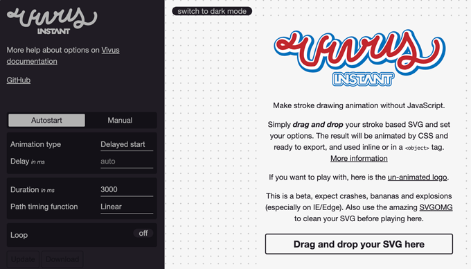
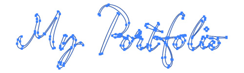
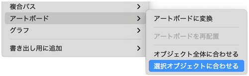
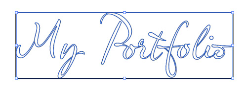
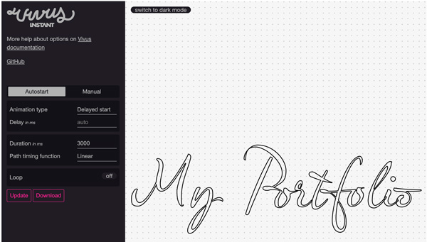
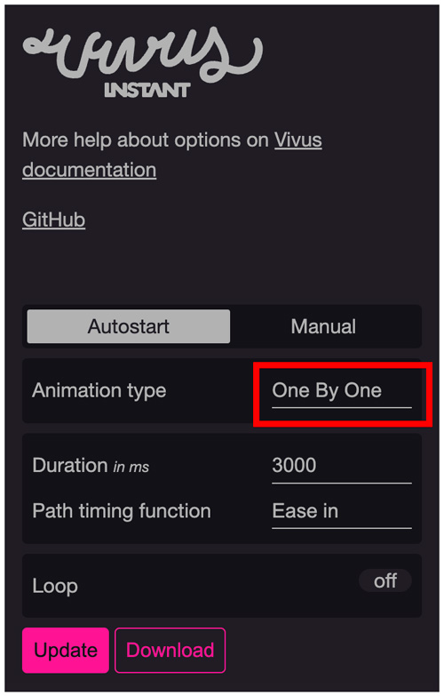
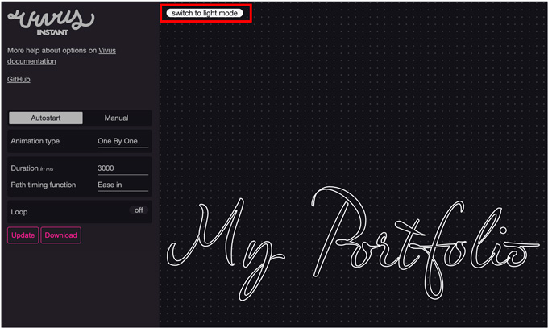

Vivus Instant
- アウトラインストロークのみのアニメーション

Illustratorで文字をアウトラインにする
- 文字を入力（幅：300px程度）して「書式」→「アウトラインを作成」
- アウトライン化したとき、ストロークが見える書体を選択する
- 「線色：黒」「塗り：なし」

アートボードを「選択オブジェクトに合わせる」
- 最小限の大きさにする


Vivus Instantの操作
ブラウザのVivus Instant上に「ドラッグ&ドロップ」

１文字ずつ表示を設定
- 「Animation type」を「One By One」選択

白い文字のストロークに変更
- Illustratorで「線色」を「白」にして保存
- Vivus Instant上の「switch to dark modo」をクリック
- プレビューは「Update」ボタンを押す
- 「Download」ボタンを押して保存
